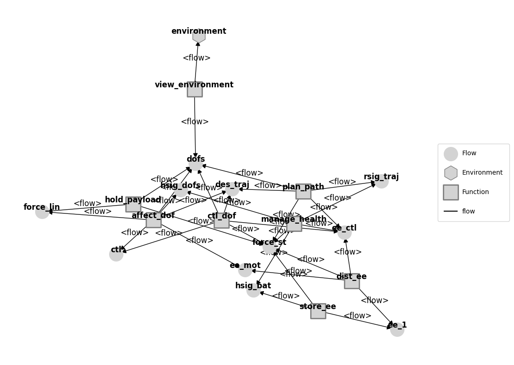
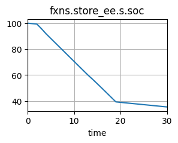
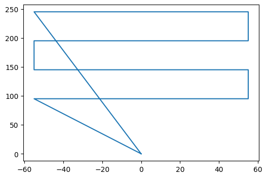
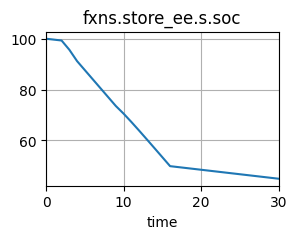
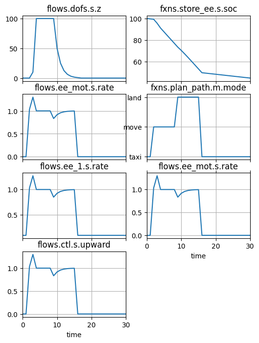
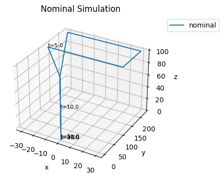
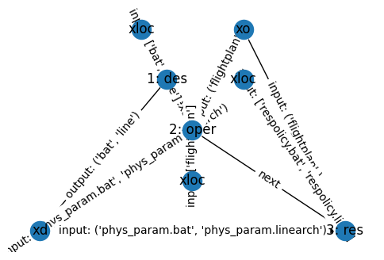
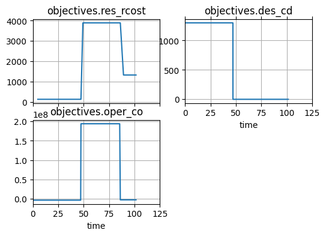

Integrated Resilience Optimization Architectures
In this notebook, we use the drone model defined in drone_mdl_opt.py to illustrate the use of SimpleProblem, ParameterSimProblem, and ProblemArchitecture' classes to set up optimization architectures.
Prior to reading this notebook it may be helpful to get some background on the problem and optimization architectures via the following references:
Hulse, D., Biswas, A., Hoyle, C., Tumer, I. Y., Kulkarni, C., & Goebel, K. (2021). Exploring Architectures for Integrated Resilience Optimization. Journal of Aerospace Information Systems, 18(10), 665-678.
This reference presents a version of this Drone Optimization case study, and also introduces the concept of a resilience optimization architecture.
This drone case study can further be viewed here: https://github.com/DesignEngrLab/resil_opt_examples/tree/main/Drone%20Problem
Hulse, D., & Hoyle, C. (2022). Understanding Resilience Optimization Architectures: Alignment and Coupling in Multilevel Decomposition Strategies. Journal of Mechanical Design, 144(11), 111704.
This reference provides a better review of what is meant by “optimization architectures” as well as different formulations which may be used in this context. While not necessary for comprehending this demonstration, it may be helpful for understanding how it should be used in practice.
Copyright © 2024, United States Government, as represented by the Administrator of the National Aeronautics and Space Administration. All rights reserved.
The “"Fault Model Design tools - fmdtools version 2"” software is licensed under the Apache License, Version 2.0 (the "License"); you may not use this file except in compliance with the License. You may obtain a copy of the License at http://www.apache.org/licenses/LICENSE-2.0.
Unless required by applicable law or agreed to in writing, software distributed under the License is distributed on an "AS IS" BASIS, WITHOUT WARRANTIES OR CONDITIONS OF ANY KIND, either express or implied. See the License for the specific language governing permissions and limitations under the License.
from model_rural import Drone
import numpy as np
mdl = Drone()
This drone has similar structure and behaviors to the drone in model_hierarchical.py (see below), encompassing the autonomous path planning, control, rotors, electrical system, and control of the drone. However, this model has been parameterized with the following parameters:
The rotor and battery architecture can be changed
The flight height can be changed to support different heights, which in turn changes the drone’s flight plan
There is now a
ManageHealthfunction which reconfigures the flight depending on detected faults.
mg = mdl.as_modelgraph()
fig, ax = mg.draw()

This is what is called and integrated resilience optimization problem, the combined optimization of Design (cost of design architecture), Operations (cost/revenue of a single flight), and Resilience (cost of a set of hazardous scenarios).
Note that it is integrated because design model/variables (architecture) affects the operational model/variables (nominal flight), which in turn affects the resilience model (performance over scenarios).
We define each of these disciplines in opt_drone_rural.py, which we explain below:
Design Model
The cost model for the architectures is fairly simple, and involves reading costs from a dictionary (rather than any sort of dictionary). As a result, we call it from an external function, as shown:
from fmdtools.sim.search import SimpleProblem
from fmdtools_examples.multirotor_drone.script_opt_model_rural import cd
class DroneDesignProblem(SimpleProblem):
def init_problem(self):
self.add_variables("bat", "line")
self.add_objective("cd", cd)
des_prob = DroneDesignProblem()
des_prob
DroneDesignProblem with:
VARIABLES
-bat nan
-line nan
OBJECTIVES
-cd nan
We can then use the cd callable to the the design cost from this model in terms of the battery and line architecture variables:
des_prob.cd(1, 2)
np.float64(2300.0)
Note that this callable should give the same value as if we just called the identical function x_to_dcost:
from fmdtools_examples.multirotor_drone.script_opt_model_rural import x_to_dcost
assert des_prob.cd(1, 1) == x_to_dcost([1, 1])
Operational Model
The operational model comes from the flight height of the drone and its performance in the nominal scenario.
To optimize this, we define a ParameterDomain to define the variables. Note that xd_paramfunc is used to translate float variable inputs into (string) options for battery/line architecture, while plan_flight is used to plan a given trajectory at a predetermined flight height.
from fmdtools.sim.sample import ParameterDomain
from fmdtools_examples.multirotor_drone.model_rural import DroneParam
from fmdtools_examples.multirotor_drone.script_opt_model_rural import xd_paramfunc, plan_flight
pd = ParameterDomain(DroneParam)
pd.add_variables("phys_param.bat", "phys_param.linearch", var_map=xd_paramfunc)
pd.add_variable("flightplan", var_map=plan_flight)
This parameterdomain is now callable in terms of our two variables:
pd(1, 1, 10)
DroneParam(respolicy=ResPolicy(bat='to_home', line='emland'), flightplan=((0.0, 0.0, 10, 10), (0.0, 0.0, 10), (-75.0, 75.0, 10), (75.0, 75.0, 10), (75.0, 85.0, 10), (-75.0, 85.0, 10), (-75.0, 95.0, 10), (75.0, 95.0, 10), (75.0, 105.0, 10), (-75.0, 105.0, 10), (-75.0, 115.0, 10), (75.0, 115.0, 10), (75.0, 125.0, 10), (-75.0, 125.0, 10), (-75.0, 135.0, 10), (75.0, 135.0, 10), (75.0, 145.0, 10), (-75.0, 145.0, 10), (-75.0, 155.0, 10), (75.0, 155.0, 10), (75.0, 165.0, 10), (-75.0, 165.0, 10), (-75.0, 175.0, 10), (75.0, 175.0, 10), (75.0, 185.0, 10), (-75.0, 185.0, 10), (-75.0, 195.0, 10), (75.0, 195.0, 10), (75.0, 205.0, 10), (-75.0, 205.0, 10), (-75.0, 215.0, 10), (75.0, 215.0, 10), (75.0, 225.0, 10), (-75.0, 225.0, 10), (0.0, 0.0, 10), (0.0, 0.0, 10, 10)), env_param=DroneEnvironmentGridParam(x_size=16, y_size=16, blocksize=10.0, gapwidth=0.0), phys_param=DronePhysicalParameters(bat='series-split', linearch='hex', batweight=0.5, archweight=1.6, archdrag=0.85))
We can now define a simulation of this model to optimize over using the ParameterSimProblem class.
In this case we are optimizing over the nominal simulation:
We can then define objectives/constraints to pull from the result/history from the simulation:
Note that while results can be pulled automatically, we will want to make sure the tracking options sent to the ParameterSimProblem include our history variables:
from fmdtools.sim.search import ParameterSimProblem
class DroneOperationalProblem(ParameterSimProblem):
def init_problem(self, **kwargs):
self.add_sim(mdl, "nominal", warn_faults=False)
self.add_parameterdomain(pd)
self.add_result_objective("co", "classify.expected_cost")
self.add_result_constraint("g_soc", "store_ee.s.soc", threshold=20) # for consistency with x_to_ocost
#self.add_result_constraint("g_fault", "endfaults", method=np.any)
self.add_history_constraint("g_max_height", "dofs.s.z", method=np.max,
threshold=122, comparator='less') # slightly different from calc_oper - will be left out of tests
oper_prob=DroneOperationalProblem()
We can now use the co callable (note that design variables should be sent first e.g. by calling cd):
oper_prob.co(1, 1, 50)
np.float64(-3650000.0)
oper_prob.constraints
{'g_soc': ResultConstraint(name='store_ee.s.soc', value=np.float64(-15.403452941176447), negative=False, time=None, method=<function sum at 0x000002A4EDCC9DF0>, threshold=20, comparator='greater', or_equal=True, satisfied=np.True_),
'g_max_height': HistoryConstraint(name='dofs.s.z', value=np.float64(-72.0), negative=False, time=None, method=<function max at 0x000002A4EDCCAC70>, threshold=122, comparator='less', or_equal=True, satisfied=np.True_)}
oper_prob.hist.plot_line("fxns.store_ee.s.soc")
(<Figure size 300x200 with 1 Axes>,
[<Axes: title={'center': 'fxns.store_ee.s.soc'}, xlabel='time'>])

oper_prob.get_end_time()
np.float64(30.0)
oper_prob.res
tend.classify.expected_cost: -3650000.0
tend.store_ee.s.soc: 35.40345294117645
tend.dofs.s.z: 0.0
oper_prob.hist.plot_trajectory('flows.dofs.s.x', 'flows.dofs.s.y')

Again, this should be the same as if we simulated manually (e.g., using x_to_ocost):
from fmdtools_examples.multirotor_drone.script_opt_model_rural import x_to_ocost
co, g_soc, g_max_height, _ = x_to_ocost([1,1], [100])
assert oper_prob.co(1, 1, 100) == co
assert oper_prob.g_soc(1, 1, 100) == g_soc
oper_prob.g_soc(1, 1, 100)
np.float64(-24.932864705882338)
oper_prob.hist.plot_line("fxns.store_ee.s.soc")
(<Figure size 300x200 with 1 Axes>,
[<Axes: title={'center': 'fxns.store_ee.s.soc'}, xlabel='time'>])

x_to_ocost([1,1], [100])
(np.float64(-50000.0),
np.float64(-24.932864705882338),
0,
{'ctl_dof': PhaseMap({np.str_('nominal'): [np.float64(0.0), np.float64(30.0)]}, {np.str_('nominal'): {np.str_('nominal')}}),
'plan_path': PhaseMap({np.str_('taxi'): [np.float64(0.0), np.float64(1.0)], np.str_('move'): [np.float64(2.0), np.float64(8.0)], np.str_('land'): [np.float64(9.0), np.float64(15.0)], 'taxi1': [np.float64(16.0), np.float64(30.0)]}, {np.str_('taxi'): {'taxi1', np.str_('taxi')}, np.str_('move'): {np.str_('move')}, np.str_('land'): {np.str_('land')}})})
Note that we can view the results of these simulations by looking in res and hist, provided the history is being tracked.
fig, ax = oper_prob.hist.plot_line("flows.dofs.s.z", "fxns.store_ee.s.soc", "flows.ee_mot.s.rate",
"fxns.plan_path.m.mode", "flows.ee_1.s.rate", 'flows.ee_mot.s.rate',
'flows.ctl.s.upward')

fig, ax = oper_prob.hist.plot_trajectories("dofs.s.x", "dofs.s.y", "dofs.s.z", title='Nominal Simulation', time_groups=['nominal'])

Note also how the cost model changes depending on the design model (Due to weight/capacity):
Resilience Model
We can finally define a resilience optimization problem to optimize the performance over a set of scenarios.
Here we define an extended parameterdomain where the resilience policy variables are now included:
from fmdtools_examples.multirotor_drone.script_opt_model_rural import xr_paramfunc
pdr = ParameterDomain(DroneParam)
pdr.add_variables("phys_param.bat", "phys_param.linearch", var_map=xd_paramfunc)
pdr.add_variable("flightplan", var_map=plan_flight)
pdr.add_variables("respolicy.bat", "respolicy.line", var_map=xr_paramfunc)
pdr(1,1,50, 1,2)
DroneParam(respolicy=ResPolicy(bat='to_home', line='to_nearest'), flightplan=((0.0, 0.0, 10, 10), (0.0, 0.0, 50), (-55.0, 95.0, 50), (55.0, 95.0, 50), (55.0, 145.0, 50), (-55.0, 145.0, 50), (-55.0, 195.0, 50), (55.0, 195.0, 50), (55.0, 245.0, 50), (-55.0, 245.0, 50), (0.0, 0.0, 50), (0.0, 0.0, 10, 10)), env_param=DroneEnvironmentGridParam(x_size=16, y_size=16, blocksize=10.0, gapwidth=0.0), phys_param=DronePhysicalParameters(bat='series-split', linearch='hex', batweight=0.5, archweight=1.6, archdrag=0.85))
We further define the resilience simulation. Note that the fault sample fs is defined as single-component battery modes.
from fmdtools_examples.multirotor_drone.script_opt_model_rural import fs
class DroneResilienceProblem(ParameterSimProblem):
def init_problem(self, **kwargs):
self.add_sim(mdl, "fault_sample", fs, include_nominal=False)
self.add_parameterdomain(pdr)
self.add_result_objective("rcost", "classify.expected_cost")
res_prob = DroneResilienceProblem()
fs.faultdomain
FaultDomain with faults:
-('drone.fxns.store_ee.ca.comps.s1p1', 'break')
-('drone.fxns.store_ee.ca.comps.s1p1', 'degr')
-('drone.fxns.store_ee.ca.comps.s1p1', 'lowcharge')
-('drone.fxns.store_ee.ca.comps.s1p1', 'nocharge')
-('drone.fxns.store_ee.ca.comps.s1p1', 'short')
As well as the variable for the resilience policy, which, (like the operational parameters) is translated into a parameter using the function spec_respol:
We can now use the callable rcost:
res_prob.rcost(1,1, 50, 1,1)
np.float64(131.32166666666666)
This takes this long to simulate:
res_prob.time_execution()
2.139131546020508
One issue with this formulation is that it assumes a static faultsample.
However, since the length of the phases in the PhaseMap change, we may want to regenerate the sample with each variable value. We can do that by calling fault_sample_from from the ParameterSimProblem.
Figuring out the right arguments to fault_sample_from is challenging, so we prototype them below using propagate.gen_sampleapproach to verify that the faultsample generated is what we wanted.
from fmdtools.sim.propagate import Simulation
from fmdtools.analyze.phases import from_hist
phases = from_hist(oper_prob.hist)
sim = Simulation(mdl=mdl)
sim.history = oper_prob.hist
app = sim.gen_sampleapproach(faultdomains={'fd': (('singlecomp_modes', 'store_ee'), {})},
faultsamples={'fs': (('fault_phases', 'fd', 'move'), {'phasemap': 'plan_path'})},
get_phasemap=True)
app
SampleApproach for drone with:
faultdomains: fd
faultsamples: fs
app.faultsamples['fs'].phasemap
PhaseMap({np.str_('taxi'): [np.float64(0.0), np.float64(1.0)], np.str_('move'): [np.float64(2.0), np.float64(8.0)], np.str_('land'): [np.float64(9.0), np.float64(15.0)], 'taxi1': [np.float64(16.0), np.float64(30.0)]}, {np.str_('taxi'): {'taxi1', np.str_('taxi')}, np.str_('move'): {np.str_('move')}, np.str_('land'): {np.str_('land')}})
app.scenarios()
[SingleFaultScenario(sequence={5.0: Injection(faults={'drone.fxns.store_ee.ca.comps.s1p1': ['break']}, disturbances={})}, times=(np.float64(5.0),), obj='drone.fxns.store_ee.ca.comps.s1p1', fault='break', rate=np.float64(7e-07), name='drone_fxns_store_ee_ca_comps_s1p1_break_t5p0', time=np.float64(5.0), phase=np.str_('move')),
SingleFaultScenario(sequence={5.0: Injection(faults={'drone.fxns.store_ee.ca.comps.s1p1': ['degr']}, disturbances={})}, times=(np.float64(5.0),), obj='drone.fxns.store_ee.ca.comps.s1p1', fault='degr', rate=np.float64(7e-07), name='drone_fxns_store_ee_ca_comps_s1p1_degr_t5p0', time=np.float64(5.0), phase=np.str_('move')),
SingleFaultScenario(sequence={5.0: Injection(faults={'drone.fxns.store_ee.ca.comps.s1p1': ['lowcharge']}, disturbances={})}, times=(np.float64(5.0),), obj='drone.fxns.store_ee.ca.comps.s1p1', fault='lowcharge', rate=np.float64(9.333333333333335e-07), name='drone_fxns_store_ee_ca_comps_s1p1_lowcharge_t5p0', time=np.float64(5.0), phase=np.str_('move')),
SingleFaultScenario(sequence={5.0: Injection(faults={'drone.fxns.store_ee.ca.comps.s1p1': ['nocharge']}, disturbances={})}, times=(np.float64(5.0),), obj='drone.fxns.store_ee.ca.comps.s1p1', fault='nocharge', rate=np.float64(1.4000000000000001e-06), name='drone_fxns_store_ee_ca_comps_s1p1_nocharge_t5p0', time=np.float64(5.0), phase=np.str_('move')),
SingleFaultScenario(sequence={5.0: Injection(faults={'drone.fxns.store_ee.ca.comps.s1p1': ['short']}, disturbances={})}, times=(np.float64(5.0),), obj='drone.fxns.store_ee.ca.comps.s1p1', fault='short', rate=np.float64(7e-07), name='drone_fxns_store_ee_ca_comps_s1p1_short_t5p0', time=np.float64(5.0), phase=np.str_('move'))]
We may also want to provide a multiprocessing pool to speed the simulation up:
from multiprocessing import Pool
pool = Pool(5)
Now that we know what arguments to use, we can construct the resilience problem:
class DroneFullResilienceProblem(ParameterSimProblem):
def init_problem(self, **kwargs):
self.add_parameterdomain(pdr)
self.add_sim(mdl, "fault_sample_from",
faultdomains={'fd': (('singlecomp_modes', 'store_ee'), {})},
faultsamples={'fs': (('fault_phases', 'fd', 'move'), {'phasemap': 'plan_path'})},
get_phasemap=True,
include_nominal=False,
pool=pool,
auto_close_pool=False,
warn_faults=False)
self.add_result_objective("rcost", "classify.expected_cost")
res_prob = DroneFullResilienceProblem()
from fmdtools.sim.propagate import fault_sample_from
p = res_prob.parameterdomain(2,2, 40, 2, 2)
res, hist, fs = fault_sample_from(mdl.new(p=p),
faultdomains={'fd': (('singlecomp_modes', 'store_ee'), {})},
faultsamples={'fs': (('fault_phases', 'fd', 'move'), {'phasemap': 'plan_path'})},
get_phasemap=True,
pool=pool,
auto_close_pool=False,
include_nominal=False)
SCENARIOS COMPLETE: 0%| | 0/1 [00:00<?, ?it/s]
SCENARIOS COMPLETE: 100%|██████████| 1/1 [00:05<00:00, 5.32s/it]
fs['nominal'].faultsamples['fs'].scenarios()
[SingleFaultScenario(sequence={7.0: Injection(faults={'drone.fxns.store_ee.ca.comps.s1p1': ['break']}, disturbances={})}, times=(np.float64(7.0),), obj='drone.fxns.store_ee.ca.comps.s1p1', fault='break', rate=np.float64(1.0999999999999998e-06), name='drone_fxns_store_ee_ca_comps_s1p1_break_t7p0', time=np.float64(7.0), phase=np.str_('move')),
SingleFaultScenario(sequence={7.0: Injection(faults={'drone.fxns.store_ee.ca.comps.s1p1': ['degr']}, disturbances={})}, times=(np.float64(7.0),), obj='drone.fxns.store_ee.ca.comps.s1p1', fault='degr', rate=np.float64(1.0999999999999998e-06), name='drone_fxns_store_ee_ca_comps_s1p1_degr_t7p0', time=np.float64(7.0), phase=np.str_('move')),
SingleFaultScenario(sequence={7.0: Injection(faults={'drone.fxns.store_ee.ca.comps.s1p1': ['lowcharge']}, disturbances={})}, times=(np.float64(7.0),), obj='drone.fxns.store_ee.ca.comps.s1p1', fault='lowcharge', rate=np.float64(1.4666666666666669e-06), name='drone_fxns_store_ee_ca_comps_s1p1_lowcharge_t7p0', time=np.float64(7.0), phase=np.str_('move')),
SingleFaultScenario(sequence={7.0: Injection(faults={'drone.fxns.store_ee.ca.comps.s1p1': ['nocharge']}, disturbances={})}, times=(np.float64(7.0),), obj='drone.fxns.store_ee.ca.comps.s1p1', fault='nocharge', rate=np.float64(2.2e-06), name='drone_fxns_store_ee_ca_comps_s1p1_nocharge_t7p0', time=np.float64(7.0), phase=np.str_('move')),
SingleFaultScenario(sequence={7.0: Injection(faults={'drone.fxns.store_ee.ca.comps.s1p1': ['short']}, disturbances={})}, times=(np.float64(7.0),), obj='drone.fxns.store_ee.ca.comps.s1p1', fault='short', rate=np.float64(1.0999999999999998e-06), name='drone_fxns_store_ee_ca_comps_s1p1_short_t7p0', time=np.float64(7.0), phase=np.str_('move'))]
res_prob.rcost(2, 2, 40, 2, 2)
np.float64(246.23499999999999)
res_prob.time_execution(reps=10)
3.6508059024810793
dict(res_prob.res.nominal)
{'drone_fxns_store_ee_ca_comps_s1p1_break_t7p0.tend.classify.expected_cost': np.float64(63.19499999999999),
'drone_fxns_store_ee_ca_comps_s1p1_degr_t7p0.tend.classify.expected_cost': np.float64(63.19499999999999),
'drone_fxns_store_ee_ca_comps_s1p1_lowcharge_t7p0.tend.classify.expected_cost': np.float64(69.59333333333333),
'drone_fxns_store_ee_ca_comps_s1p1_nocharge_t7p0.tend.classify.expected_cost': np.float64(126.39000000000001),
'drone_fxns_store_ee_ca_comps_s1p1_short_t7p0.tend.classify.expected_cost': np.float64(63.19499999999999)}
Note that this should produce identical values to the manually-constructed x_to_rcost:
from fmdtools_examples.multirotor_drone.script_opt_model_rural import x_to_rcost
a = res_prob.rcost(2, 2, 40, 2, 2)
b = x_to_rcost([2, 2], [40], [2, 2])
a
np.float64(246.23499999999999)
b
np.float64(246.23500000312924)
assert abs(a - b) < 0.00001
Combined Simulation/Optimization
These optimization problems are clearly related, and so we may want to optimize them together. We can combine them into one big problem using ProblemArchitecture:
To set up a problem architecture, we should first define some shared variables. In this prolbem it is the battery and line architecture, as well as the flightplan (z):
We can then add the problems using add_problem, specifying what connectors for each correspond to inputs and outputs of the problem.
In this case, the design problem outputs the battery and line architecture to both the operational and resilience problem while the operational problem outputs the flightplan to the resilience problem.
from fmdtools.sim.search import ProblemArchitecture
class DroneProblemArch(ProblemArchitecture):
def init_problem(self, **kwargs):
self.add_connector_variable("xd", "bat", "line")
self.add_connector_variable("xo", "flightplan")
self.add_problem("des", DroneDesignProblem(), outputs={"xd": ("bat", "line")})
self.add_problem("oper", DroneOperationalProblem(),
inputs={"xd": ("phys_param.bat", "phys_param.linearch")},
outputs={"xo": ("flightplan",)})
self.add_problem("res", DroneFullResilienceProblem(),
inputs={"xd": ("phys_param.bat", "phys_param.linearch"),
"xo": ("flightplan",)})
We can visualize this architecture using:
prob_arch = DroneProblemArch()
prob_arch
DroneProblemArch with:
CONNECTORS
-xd [nan nan]
-xo [nan]
PROBLEMS
-des({'des_xloc': ['bat', 'line']}) -> ['xd']
-oper({'xd': ('phys_param.bat', 'phys_param.linearch'), 'oper_xloc': ['flightplan']}) -> ['xo']
-res({'xd': ('phys_param.bat', 'phys_param.linearch'), 'xo': ('flightplan',), 'res_xloc': ['respolicy.bat', 'respolicy.line']}) -> []
VARIABLES
-des_xloc [nan nan]
-oper_xloc [nan]
-res_xloc [nan nan]
OBJECTIVES
-des_cd nan
-oper_co nan
-res_rcost nan
CONSTRAINTS
-oper_g_soc nan
-oper_g_max_height nan
or:
fig, ax = prob_arch.show_sequence()

We can now interact with callables for each of the three objectives:
prob_arch.des_cd(1,1)
np.float64(1300.0)
prob_arch.oper_co(50)
np.float64(-3650000.0)
prob_arch.res_rcost(1, 1)
np.float64(127.83833333333334)
These can also be called in terms of the full set of variables:
prob_arch.res_rcost_full(1,1, 50, 1, 1)
np.float64(127.83833333333334)
We can calculate the total computational time of this below:
prob_arch.time_execution(reps=10)
---------------------------------------------------------------------------
IndexError Traceback (most recent call last)
File ~\AppData\Roaming\uv\python\cpython-3.14.0b1-windows-x86_64-none\Lib\multiprocessing\pool.py:856, in IMapIterator.next(self, timeout)
855 try:
--> 856 item = self._items.popleft()
857 except IndexError:
IndexError: pop from an empty deque
During handling of the above exception, another exception occurred:
KeyboardInterrupt Traceback (most recent call last)
Cell In[48], line 1
----> 1 prob_arch.time_execution(reps=10)
File ~\Documents\GitHub\fmdtools\src\fmdtools\sim\search.py:416, in BaseProblem.time_execution(self, reps, *x)
414 starttime = time.time()
415 for rep in range(reps):
--> 416 self.update_objectives(*x)
417 t_ave = (time.time() - starttime) / reps
418 return t_ave
File ~\Documents\GitHub\fmdtools\src\fmdtools\sim\search.py:1598, in ProblemArchitecture.update_objectives(self, *x)
1596 def update_objectives(self, *x):
1597 """Take place of update_objectives in base problem."""
-> 1598 self.update_full_problem(*x, force_update=True)
File ~\Documents\GitHub\fmdtools\src\fmdtools\sim\search.py:1591, in ProblemArchitecture.update_full_problem(self, probname, force_update, *x_full)
1589 else:
1590 x_loc = []
-> 1591 self.update_problem(problem, *x_loc, force_update=force_update)
File ~\Documents\GitHub\fmdtools\src\fmdtools\sim\search.py:1646, in ProblemArchitecture.update_problem(self, probname, force_update, *x)
1644 self.update_problem(upstream_prob, force_update=force_update)
1645 x_inputs = self.get_inputs_as_x(probname, *x)
-> 1646 self.problems[probname].call_outputs(*x_inputs, force_update=force_update)
1647 self.problems[probname].consistent = True
1648 self.update_problem_objectives(probname)
File ~\Documents\GitHub\fmdtools\src\fmdtools\sim\search.py:284, in BaseProblem.call_outputs(self, force_update, *x)
268 """
269 Get all outputs at the given value of x.
270
(...) 281 values of the constraints
282 """
283 if self.new_x(*x) or force_update:
--> 284 self.update_objectives(*x)
285 return self.get_objectives(), self.get_constraints()
File ~\Documents\GitHub\fmdtools\src\fmdtools\sim\search.py:760, in BaseSimProblem.update_objectives(self, *x)
758 """Update objectives/constraints by simulating the model at x."""
759 self.update_variables(*x)
--> 760 self.res, self.hist = self.sim_mdl(*self.current_x())
761 for obj in {**self.objectives, **self.constraints}.values():
762 if isinstance(obj, HistoryObjective) or isinstance(obj, HistoryConstraint):
File ~\Documents\GitHub\fmdtools\src\fmdtools\sim\search.py:880, in ParameterSimProblem.sim_mdl(self, *x)
878 mdl_kwargs = {'p': p, 'sp': {'end_time': end_time}}
879 to_return = self.obj_con_des_res()
--> 880 all_res = self.prop_method(self.mdl.new(**mdl_kwargs),
881 *self.args,
882 protect=False,
883 to_return=to_return,
884 showprogress=False,
885 **self.kwargs)
886 return all_res[0].flatten(), all_res[1].flatten()
File ~\Documents\GitHub\fmdtools\src\fmdtools\sim\propagate.py:254, in fault_sample_from(mdl, **kwargs)
252 def fault_sample_from(mdl, **kwargs):
253 """Injects and propagates faults in a model given SampleApproach arguments."""
--> 254 return nested_sample(mdl, ps=Scenario(), **kwargs)
File ~\Documents\GitHub\fmdtools\src\fmdtools\sim\propagate.py:317, in nested_sample(mdl, ps, **kwargs)
289 """
290 Simulate a set of fault scenarios within a ParameterSample.
291
(...) 313 scenario with structure {'nomscen1': app1}
314 """
315 sim = NestedSimulation(mdl=mdl, samp=ps, name="nested sample",
316 **filter_kwargs(NestedSimulation, **kwargs))
--> 317 res, hist = sim(**get_sim_call_kwargs(sim, **kwargs))
318 return res, hist, sim.apps
File ~\Documents\GitHub\fmdtools\src\fmdtools\sim\propagate.py:498, in BaseSimulation.__call__(self, **kwargs)
496 """Run the sim, save its results (if needed), return its result and history."""
497 try:
--> 498 self.run(**kwargs)
499 except Exception as e:
500 raise Exception("Error simulating "+self.name+" scenario(s)") from e
File ~\Documents\GitHub\fmdtools\src\fmdtools\sim\propagate.py:849, in MultiSimulation.run(self, **kwargs)
847 except KeyError as e:
848 raise Exception("Not enough models: "+str(self.mdls)) from e
--> 849 res_list = list(tqdm.tqdm(runner(inputs),
850 total=len(inputs),
851 disable=not (self.showprogress),
852 desc="SCENARIOS COMPLETE"))
853 for i, scen in enumerate(scenlist):
854 self.get_output(res_list, scen.name, i)
File c:\Users\dhulse\Documents\GitHub\fmdtools\.venv\Lib\site-packages\tqdm\std.py:1169, in tqdm.__iter__(self)
1166 # If the bar is disabled, then just walk the iterable
1167 # (note: keep this check outside the loop for performance)
1168 if self.disable:
-> 1169 for obj in iterable:
1170 yield obj
1171 return
File ~\AppData\Roaming\uv\python\cpython-3.14.0b1-windows-x86_64-none\Lib\multiprocessing\pool.py:861, in IMapIterator.next(self, timeout)
859 self._pool = None
860 raise StopIteration from None
--> 861 self._cond.wait(timeout)
862 try:
863 item = self._items.popleft()
File ~\AppData\Roaming\uv\python\cpython-3.14.0b1-windows-x86_64-none\Lib\threading.py:369, in Condition.wait(self, timeout)
367 try: # restore state no matter what (e.g., KeyboardInterrupt)
368 if timeout is None:
--> 369 waiter.acquire()
370 gotit = True
371 else:
KeyboardInterrupt:
prob_arch.constraints
{'oper_g_soc': -25.403452941176432, 'oper_g_max_height': -72.0}
Optimization
Below we show a very simple optimization of these variables using brute force search. Much more sophisticated architectures/methods can be used on this problem, this code is mainly to demonstrate how these disciplines can be used together as a single objective/problem.
import itertools
def brute_search(prob_arch, Xranges = [[0,4,1],[0,3,1],[10, 130, 10],[0,4,1],[0,4,1]], skip_iter = False):
Xvals = [ e for e in itertools.product(*(range(x[0],x[1],x[2]) for x in Xranges))]
opt_hist = []
iter = 0
for X in Xvals:
dcost = prob_arch.des_cd(*X[:2])
ocost = prob_arch.oper_co(X[2])
rcost = prob_arch.res_rcost(*X[3:])
tot_cost = dcost + ocost + rcost
is_feasible = all([v<=0.0 for v in prob_arch.constraints.values()])
if not opt_hist:
opt_hist= [[tot_cost, X]]
elif tot_cost < opt_hist[-1][0] and is_feasible:
opt_hist.append([tot_cost, X])
if skip_iter <= iter and skip_iter:
break
else:
iter += 1
return opt_hist
opt_hist = brute_search(prob_arch, skip_iter=20)
Note that given the sim time of ~0.5s, the full execution time should take:
Xranges = [[0,4,1],[0,3,1],[10, 130, 10],[0,4,1],[0,4,1]]
Xvals = [ e for e in itertools.product(*(range(x[0],x[1],x[2]) for x in Xranges))]
len(Xvals) * 0.4 /60
15.360000000000001
# opt_hist = brute_search(skip_iter=10)
The full history of objective values can be viewed in iter_hist:
prob_arch.iter_hist
time: array(99)
iter: array(99)
variables:
--des_xloc:
----bat: array(100)
----line: array(100)
--oper_xloc:
----flightplan: array(100)
--res_xloc:
----respolicy.bat: array(100)
----respolicy.line: array(100)
objectives:
--des_cd: array(99)
--oper_co: array(99)
--res_rcost: array(99)
constraints:
--oper_g_soc: array(99)
--oper_g_max_height: array(99)
see:
prob_arch.iter_hist.plot_line("objectives.res_rcost", "objectives.des_cd", "objectives.oper_co")
(<Figure size 600x400 with 4 Axes>,
array([<Axes: title={'center': 'objectives.res_rcost'}, xlabel=' '>,
<Axes: title={'center': 'objectives.des_cd'}, xlabel='time'>,
<Axes: title={'center': 'objectives.oper_co'}, xlabel='time'>,
<Axes: >], dtype=object))

(of course, we also recorded a history in the function)
opt_hist
[[194153890.785, (0, 0, 10, 0, 0)], [-2748675.225, (0, 0, 20, 0, 0)]]
pool.close()
pool.terminate()
This illustrates the use of a monolithic optimization architecture for exploring the variables in these sims. We could create more, per the references, or use specialized methods to speed up the search:
e.g., using one of the architectures (bilevel, multi-stage, etc) defined previously
searching the variables with a specialized optimization method (e.g., tree search)
Setting the policy as a disturbance, rather than a parameter. This would enable staged execution of the resilience scenarios, greatly decreasing computational time.